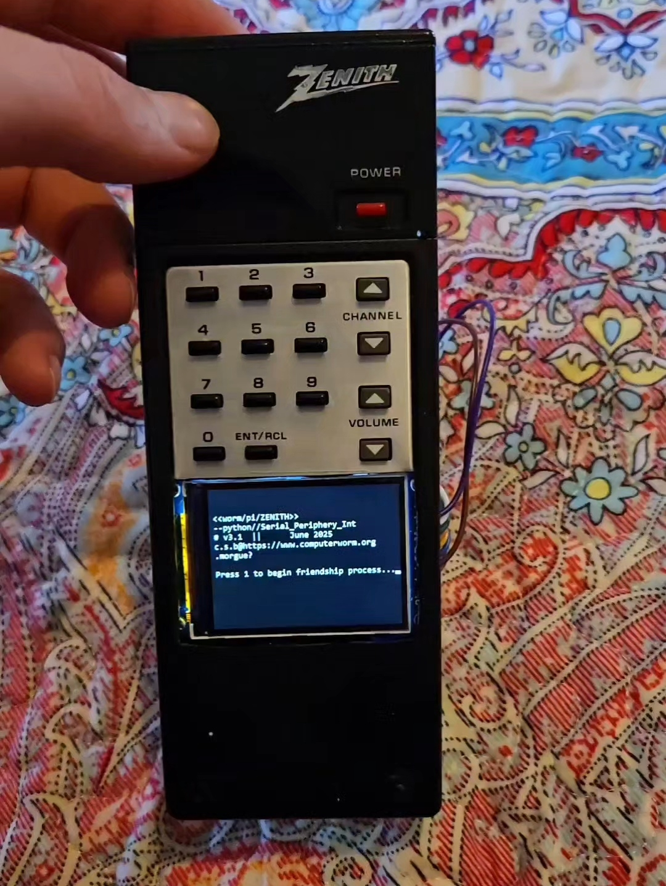
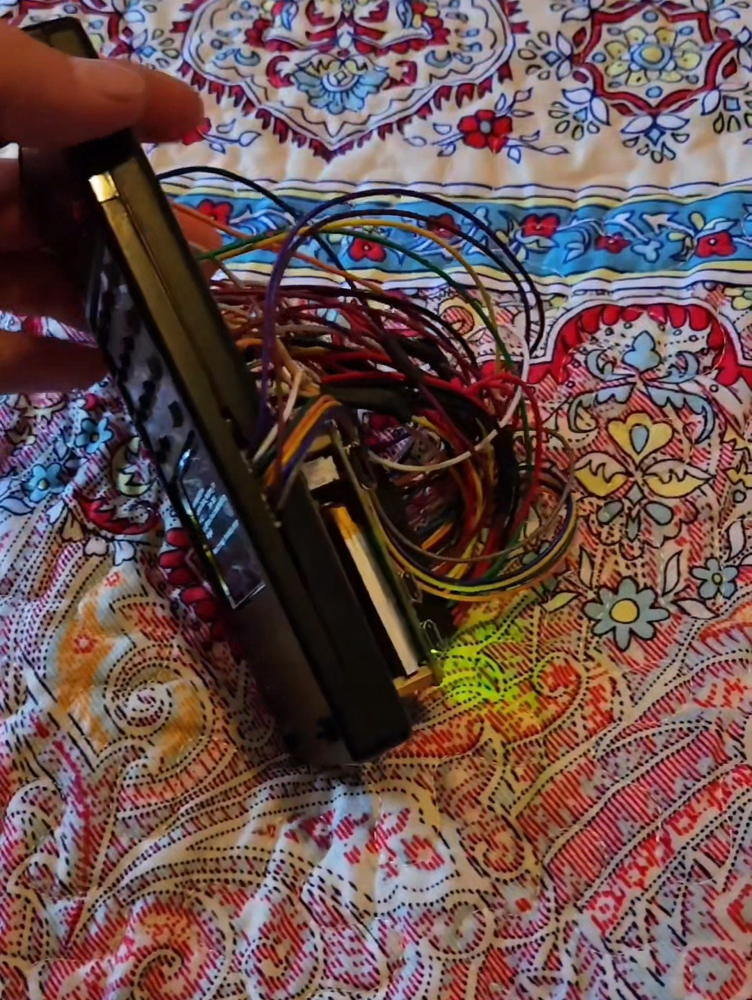
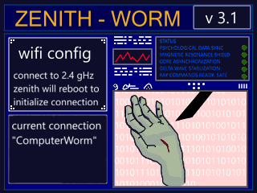
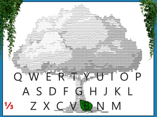
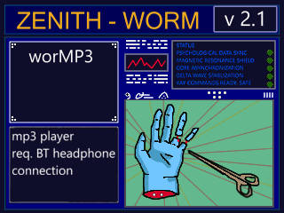
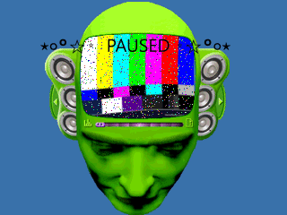
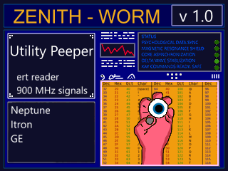
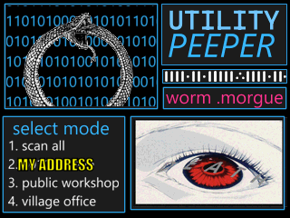
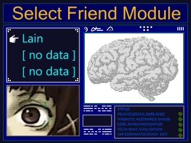
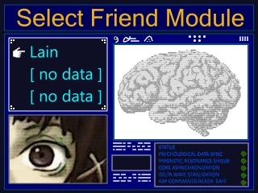

ZENITH-Worm
June3, 2025

Software: Introduction: On boot my main menu script opens. Navigated by channel up and down on the remote to cycle through the different programs. Pressing enter will open the selected script and then the newly opened script will
terminate the main menu. Power button from any of my programs will do the reverse and relaunch the main menu program. This keeps things from getting bogged down with
too much running at once and allows me to keep all my programs neat and tidy in there own seperate files. Opened and closed as needed. I put a lot of work into these programs and also the unique animations of each one in the main menu.
Kind of going along the theme of "bad things happening to hands" for the animations. Wifi Configurator  A virtual keyboard I built from scratch to let me enter in wifi names and passwords using nothing but the buttons on the zenith worMP3  An mp3 player I'm making. Zenith has no external speakers so this requres a bluetooth headphone connection utility peeper  in progress: a utlity meter reading program. Picking up the meters broadcasts with a sdr-rtl module. Lainagotchi Tamagotchi inspired game. Written for windows [see download page], ported to my zenith
 
